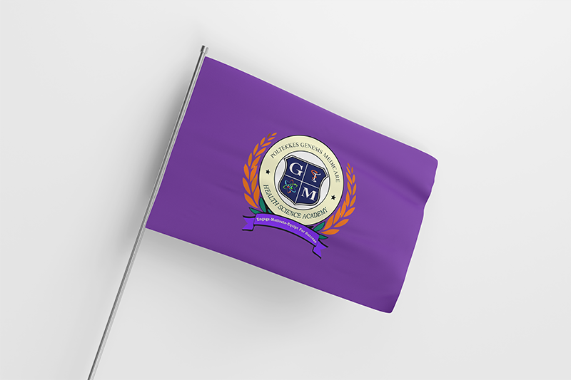
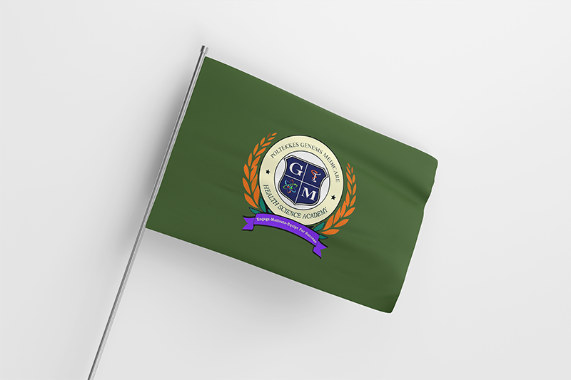

Lingkaran yang berwarna putih tulang yang di dalamnya terdapat tulisan
Politekkes Genesis Medicare dan Health Science Academy yang dibatasi oleh tanda bintang.
Perisai berwarna biru yang di dalamnya terdapat huruf G dan M serta
gambar labu Erlenmeyer yang menyatu dengan lingkaran diagonal serta ular yang sedang melilit mangkuk.
Pada sisi bagian luar lingkaran berupa gambar padi berwana orange dan daun yang berwarna hijau.
Bagian bawah lingkaran terdapat pita berwana ungu yang didalamnya terdapat tulisan Engage-Motivate-Equip For Succes.
Lambang Politeknik sebagaimana dimaksud pada ayat (1) memiliki makna :
Lingkaran berwarna putih tulang melambangkan Poltekkes Genesis Medicare sebagai institusi pendidikan
yang mampu memberikan kesempurnaan dan kekuatan terhadap lingkungan sekitar.
Padi berwarna orange melambangkan kerendahan hati atas bertambahnya ilmu
Daun berwarna hijau melambangkan dengan ilmu mampu memberikan kehidupan yang bermanfaat dan memberikan
keteduhan serta membangkitkan energy positif bagi yang lain.
Perisai biru bermakna kekuatan dan kemampuan dalam pencapaian Visi dan Misi.
Tulisan G dan M bermakan nama institusi Genesis Medicare
Gambar labu Erlenmeyer yang menyatu dengan lingkaran diagonal bermakna jurusan
yang terdapat di Poltekkes yaitu Analis Kesehatan tidak bisa dilepaskan dengan Analis Kimia
Ular yang sedang melilit mangkuk bermakna jurusan yang terdapat di Poltekkes yaitu Farmasi
Warna lambang sebagaimana dimaksud pada ayat (1) memiliki kode warna sebagai berikut :
Lambang Poltekkes Genesis Medicare sebagaimana dimaksud pada ayat (1) sebagai berikut
Ketentuan lebih lanjut mengenai lambang diatur dengan peraturan direktur
Pasal 8
Poltekkes Genesis Medicare memiliki bendera berbentuk 4 (empat) persegi panjang dengan ukuran panjang berbanding lebar 3:2 (tiga berbanding dua),
berwarna biru dengan kode rgba.
Bendera Poltekkes sebagaimana dimaksud pada ayat (1) sebagai berikut :
Ketentuan lebih lanjut mengenai lambang diatur dengan peraturan direktur.
Jurusan memiliki bendera berbentuk 4 (empat) persegi panjang dengan kurang panjang berbanding lebar 3:2 (tiga berbanding dua)
dengan warna yang berbeda dan ditengahnya terdapat lambang Poltekkes Genesis Medicare.
Bendera sebagaimana dimakasud pada ayat (1) sebagai berikut:
Bendera program studi D-III Farmasi berwarna ungu dengan gambar sebagai berikut:

Bendera program studi D-IV Teknologi Laboratorium Medis berwarna Hijau dengan gambar sebagai berikut:

Bendera program studi D-III Analisis Kimia berwarna orange dengan gambar sebagai berikut: